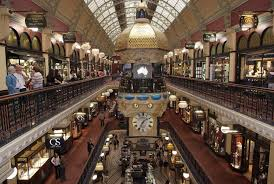
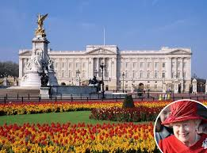

,_Elizabeth_Quay_--_2019_--_0259.jpg)
Elizabeth is an outer northern suburb of the Adelaide metropolitan area, South Australia, 24 km north of the Adelaide city centre. It is located in the City of Playford. At the 2016 census, Elizabeth had a population of 1,024. Established in 1955, it was the seat of the former local government body, the City of Elizabeth, which included Elizabeth as well as the immediately adjacent suburbs on all sides except the west. Although the City of Elizabeth no longer exists, having been amalgamated into the much larger City of Playford in 1997, the term 'Elizabeth', in the context of Adelaide, typically refers to the historic municipality and the distinct community therein.Before the 1950s, most of the area surrounding today's suburb of Elizabeth was farming land. After the end of the Second World War with its shortage of materials, the state government decided that South Australia needed to grow and become industrialised. A satellite city was planned for northern metropolitan fringe of Adelaide between the existing townships of Salisbury and Smithfield. The South Australian Housing Trust initiated a housing development program in the area, with a purchase of 1,200 hectares (3,000 acres) at the site of the present suburb. The township (now suburb) of Elizabeth was established on 16 November 1955, being named after Queen Elizabeth II, Queen of Australia.In 1964, a new local government body, the municipality of Elizabeth, later called City of Elizabeth, was created by severance from the District Council of Salisbury.This allowed the local government to focused explicitly on the newly-developed land and distinct local growing community centred at Elizabeth.
 